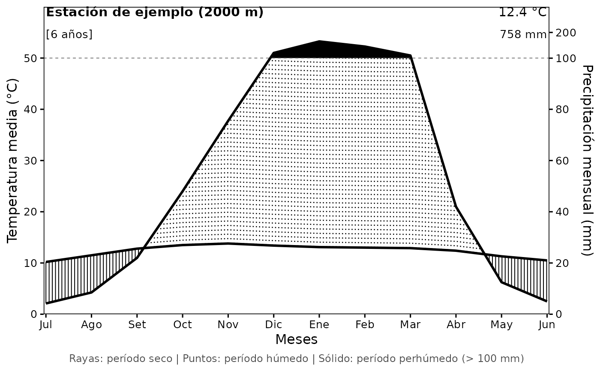
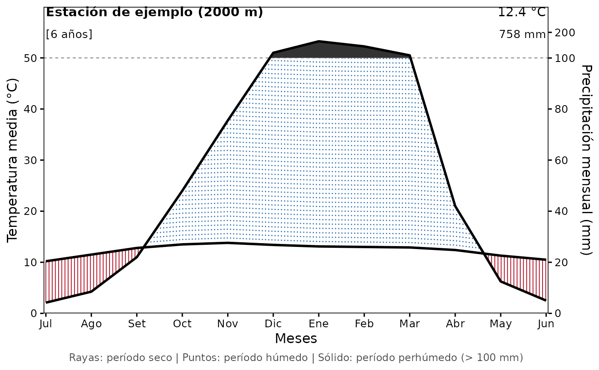
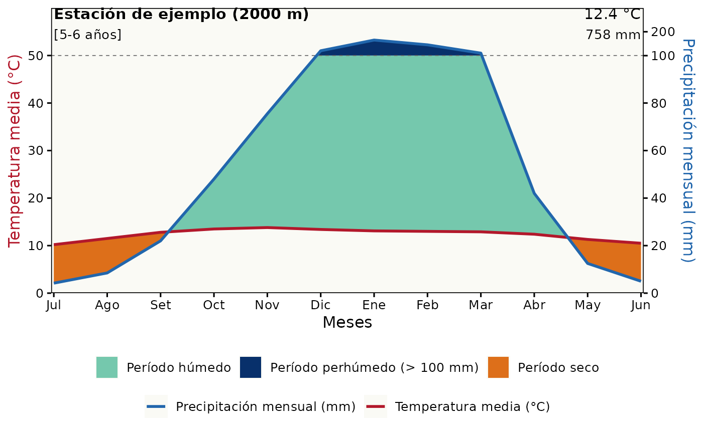
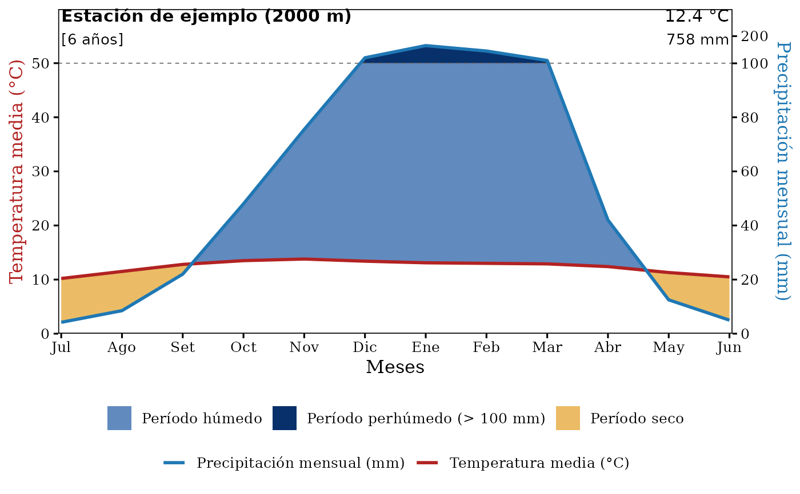

Dibuja un climatodiagrama de Walter-Lieth a partir de la temperatura media
mensual y la precipitación media mensual de una estación meteorológica.
Devuelve un objeto ggplot2::ggplot(), por lo que se puede seguir
modificando con + (temas, títulos, etc.) y guardar con
ggplot2::ggsave().
Usage
climatodiagrama(
datos,
estacion,
elevacion,
anios,
estilo = c("color", "trama"),
col_mes = "MES",
col_temp = "TMED",
col_prec = "PTOT",
color_seco = NULL,
color_humedo = NULL,
color_perhumedo = NULL,
color_temp = NULL,
color_prec = NULL,
color_fondo = "white",
alpha_area = 0.85,
grosor_linea = 1,
densidad_trama = 0.07,
leyenda = TRUE,
res = 100
)Arguments
- datos
Data frame o tibble con 12 filas y las columnas del mes, la temperatura media mensual (°C) y la precipitación media mensual (mm).
- estacion
Nombre de la estación meteorológica (texto).
- elevacion
Elevación de la estación en m s. n. m.
- anios
Años de registro. Un valor (
"6") si la temperatura y la precipitación tienen el mismo periodo de registro, o dos valores separados por un guion ("5-6"): el primero para la temperatura y el segundo para la precipitación.- estilo
Estilo de las áreas:
"color"(por defecto) o"trama"(rayas y puntos en blanco y negro). Ver Details.- col_mes, col_temp, col_prec
Nombres de las columnas de
datoscon el mes, la temperatura media y la precipitación total. Por defecto"MES","TMED"y"PTOT".- color_seco, color_humedo, color_perhumedo
Colores de los periodos seco, húmedo y perhúmedo. En
estilo = "trama"son los colores de las rayas (seco), los puntos (húmedo) y el relleno sólido (perhúmedo).- color_temp, color_prec
Colores de las curvas de temperatura y de precipitación. También se usan para los títulos de los ejes.
- color_fondo
Color de fondo del panel. Por defecto
"white".- alpha_area
Transparencia (0 a 1) del relleno de las áreas. Solo se aplica a
estilo = "color". Por defecto0.85.- grosor_linea
Grosor de las curvas de temperatura y precipitación. Por defecto
1.- densidad_trama
Separación horizontal entre rayas y puntos, en unidades de mes: un valor menor da una trama más densa. Solo se aplica a
estilo = "trama". Por defecto0.07.- leyenda
Si es
TRUE(por defecto) se muestra la leyenda (o el texto explicativo enestilo = "trama").- res
Número de puntos usados para interpolar cada tramo entre meses. Valores más altos dan un cruce más preciso entre las curvas. Por defecto
100.
Value
Un objeto ggplot2::ggplot().
Details
Convención de Walter-Lieth. La temperatura y la precipitación se representan con una relación de 1 °C = 2 mm. Cuando la curva de precipitación queda por debajo de la de temperatura el periodo es seco (la precipitación no compensa la evapotranspiración); cuando queda por encima, el periodo es húmedo. Por encima de 100 mm la escala de precipitación se comprime 10 veces y esa zona se considera perhúmeda.
Estilos.
estilo = "color": las zonas se rellenan con color y se añade una leyenda.estilo = "trama": estilo clásico en blanco y negro. El periodo seco se dibuja con rayas verticales, el húmedo con puntos y el perhúmedo con relleno sólido. Los segmentos se dibujan congeom_segment(), así que no se necesitan paquetes adicionales. La leyenda se muestra como texto al pie del gráfico.
Colores. Todos los argumentos color_* aceptan nombres de color de R
(p. ej. "firebrick") o códigos hexadecimales (p. ej. "#E8B04A"). Si se
dejan en NULL se usan los colores por defecto del estilo elegido. En
estilo = "trama", color_seco y color_humedo son los colores de las
rayas y de los puntos.
Datos de entrada. datos debe tener exactamente 12 filas (un mes por
fila, en el orden en que se quieran mostrar; tradicionalmente de julio a
junio en el hemisferio sur). Los nombres de las columnas pueden cambiarse
con col_mes, col_temp y col_prec.
See also
clima_ejemplo para un conjunto de datos de prueba.
Examples
# Estilo con colores (por defecto)
climatodiagrama(clima_ejemplo,
estacion = "Estación de ejemplo", elevacion = 2000,
anios = "6")
# Estilo clásico de rayas y puntos en blanco y negro
climatodiagrama(clima_ejemplo,
estacion = "Estación de ejemplo", elevacion = 2000,
anios = "6", estilo = "trama")

# Trama con colores propios
climatodiagrama(clima_ejemplo,
estacion = "Estación de ejemplo", elevacion = 2000,
anios = "6", estilo = "trama",
color_seco = "#B2182B", color_humedo = "#2166AC",
color_perhumedo = "grey20")

# Colores personalizados y años de registro distintos (temperatura-precipitación)
climatodiagrama(clima_ejemplo,
estacion = "Estación de ejemplo", elevacion = 2000,
anios = "5-6",
color_seco = "#D95F02", color_humedo = "#66C2A5",
color_perhumedo = "#08306B",
color_temp = "#B2182B", color_prec = "#2166AC",
color_fondo = "#FAFAF5", alpha_area = 0.9)

# Como devuelve un ggplot, se puede seguir modificando
climatodiagrama(clima_ejemplo, "Estación de ejemplo", 2000, "6") +
ggplot2::theme(text = ggplot2::element_text(family = "serif"))

if (FALSE) { # \dontrun{
# Leer los datos desde un CSV con columnas MES, TMED y PTOT
datos <- utils::read.csv("mis_datos.csv")
g <- climatodiagrama(datos, "ROCOTAL", 2010, "6")
ggplot2::ggsave("climatodiagrama.png", g, width = 7, height = 5.5, dpi = 300)
} # }